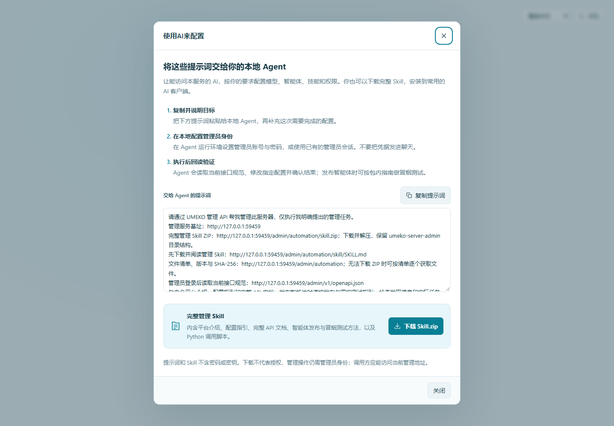

推荐：使用本地 Agent 管理智能体¶
推荐使用本地 Agent 完成智能体的日常配置、更新和发布验收。你用自然语言描述目标，它通过管理 API 读取当前配置、修改指定内容并回读结果；管理员仍可随时在控制台核对和继续编辑。涉及多个字段或连续检查时，可以减少在不同页面间反复切换。
这里的本地 Agent 是运行在你电脑或开发环境中的 AI 助手，需要具备 HTTP 请求或脚本执行能力，并能访问管理服务。它使用管理员身份管理服务器；被发布的智能体则通过 MCP、A2A 或 REST 为业务调用方执行任务。
哪些任务适合交给它¶
| 目标 | 可以让本地 Agent 完成的工作 |
|---|---|
| 新建智能体 | 查看已有模型和技能，按指定用途配置介绍、工作指引、默认主模型与视觉模型、技能范围 |
| 调整已有智能体 | 先读当前记录，只修改要求的字段，保留访问路径和其他配置，保存后回读 |
| 发布或停用 | 按要求设置启用状态，核对 Agent Card、MCP 披露和对外地址 |
| 发布后验收 | 使用合成输入检查协议发现、任务提交、终态和业务结果，给出任务 ID 与临时工作台链接 |
| 排查失败调用 | 根据明确的任务 ID 读取上下文、工具记录、输入输出和文件元数据，说明故障发生在哪一步 |
单个字段也可直接在控制台修改。配置与调用结果以服务实际返回为准，Agent 的文字说明应包含回读或测试证据。
开始使用¶
- 打开管理员登录页或控制台，点击 使用AI来配置。
- 在弹窗中点击 复制提示词，粘贴给本地 Agent；也可以下载 Skill.zip，将解压后的
umeko-server-admin目录按 AI 客户端的规则安装。 - 在 Agent 所在的本地环境配置管理员账号和密码，或使用已有管理员会话。完整方法见AI 与 API 管理。不要把密码、Cookie 或模型 Key 粘贴到聊天中。
- 说明要管理的智能体名称或访问路径，以及这次具体要改什么。Agent 应先读取当前记录和运行版本的 API 规范，找到实际 ID，再执行修改。
- 保存后让 Agent 回读确认；需要发布验收时，明确给出测试范围和合成材料，再查看它返回的任务 ID、结果及工作台链接。
本地 Agent 必须能够访问提示词中的管理地址。远程运行的 AI 不一定能连接公司内网；地址中的 127.0.0.1 也只代表该 AI 自己所在的机器。使用实际可达的管理入口，保留完整管理前缀。

可以直接交给 Agent 的任务示例¶
先完成上述接入，再给出具体目标。以下均为通用示例，智能体名称和模型选项应替换为你实际要管理的对象。
调整已有智能体¶
请读取“资料助手”智能体的当前配置，将公开介绍更新为：
“根据用户提供的文档回答问题，并说明答案所依据的材料。”
同时在工作指引中补充：缺少关键材料时说明缺少什么，并提供可用的临时工作台链接。
保留现有访问路径、默认模型、技能范围和启用状态。
保存后回读配置，告诉我具体改了哪些字段。
如果有重名，Agent 应先确认目标访问路径。已有智能体的 slug 不能修改；需要新访问路径时，应明确新建还是保留原入口。
新建并发布智能体¶
我要新建一个名为“资料助手”、访问路径为 document-assistant 的智能体，
用途是根据用户上传的文档回答问题，材料不足时提示补充。
先列出当前可选的主模型、视觉模型和技能，等我选定后再创建。
创建后启用，并返回实际的 Agent Card、MCP、A2A 和 REST 入口。
先检查 Card 与 MCP 工具披露，不提交实际业务任务。
如果模型和技能已经选定，可以直接提供选项，减少往返。Agent 应使用服务返回的实际 ID 和入口地址；完整 Skill 正文、脚本与 Provider 密钥不属于公开 Agent Card 内容。
对发布后的智能体做冒烟测试¶
请对 document-assistant 做 MCP 和 A2A 冒烟测试，不修改其配置或鉴权方式。
每种协议只提交一个简短的合成文本任务：“请用一句话说明你可以帮助处理哪些文档任务。”
检查发现信息、任务提交和最终结果；每个任务最多等待两分钟，未结束就报告当前状态。
返回每种协议的任务 ID、结果、可用临时工作台链接，并区分已经验证和未验证的部分。
测试输入应符合智能体的能力要求：图像质检需要合成测试图片，不能以纯文本问候的结果判断质检功能。ZIP 中的 references/agent-publishing.md 包含 REST、MCP、A2A 的发布与冒烟测试方法。只读取 Card 或提交成功，都不足以证明模型执行和业务结果正确。
发布后在哪里核对¶
在智能体与服务接入查看保存的介绍、模型、技能与启用状态；在资源监控按任务 ID 查看上下文、工具过程和结果。需要观察实时进度或补充材料时，打开该任务返回的临时工作台链接；节点期限见临时工作台。
管理 API 继续要求管理员身份。写入技能代码、配置下发和批准可信版本是分别执行的操作，按本次明确要求处理；下载管理 Skill 不会自动授予权限或批准代码。配置监听端口、TLS、部署前缀等启动项时，仍由服务器操作者按配置指引和部署约定完成。